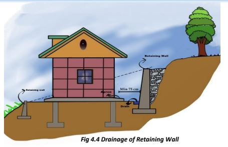
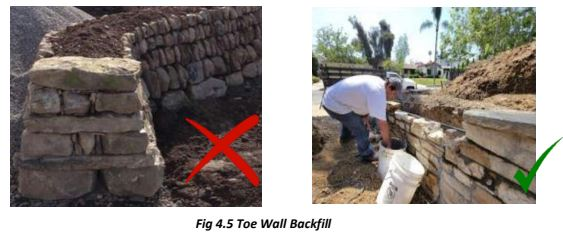
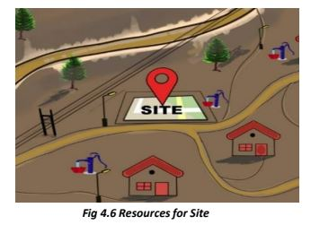
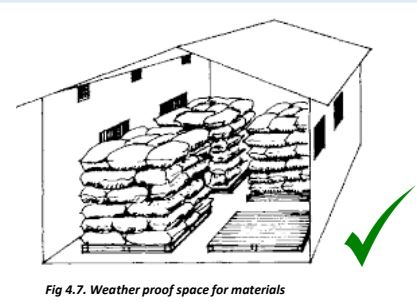
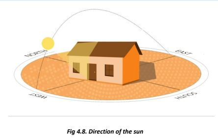
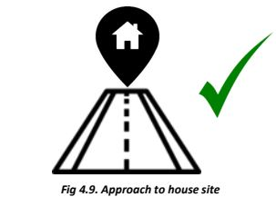
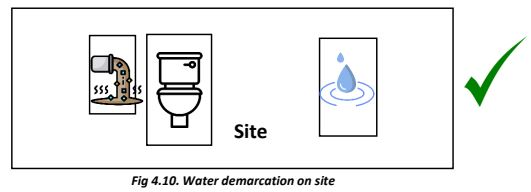

Check for site connectivity
Stones obtained during the clearing of site must be stored in heaps as they can be used during the construction and leveling phase. These can be kept outside. However, other building materials like cement, timber etc. must be kept under a weatherproof shed.
● Cut the slope in 0.5 to 1m high steps and store stones obtained during cutting.
● Avoid slope cuttings more than 1 m deep to obtain one large terrace for making house, instead make several terraces each with limited depth of cutting. Level the site using granular material/soil.
• Make arrangements for the drainage of water through toe walls and backfilling. This can be done by granular filling and providing weep holes in toe/retaining walls.
• Make sure to provide drainage while preparing the site to avoid water logging.
● Construct toe walls and do backfilling using stones to retain the slope and drainage of water.
● Make arrangements for water supply, electric point, approach road, storage of material etc.
● Arrange a weather proof space for storing cement. Store cement on waterproof raised platforms.
Note the direction of the sun with respect to the site. Trim obstructions like trees and shrubs and locate windows etc. to get proper sunlight.
Mark a good approach to your house site.
Mark the source of water and where waste water will be disposed off. Mark the places where your toilet and toilet pits shall be made. Ensure that foul water does not mix with clean water.